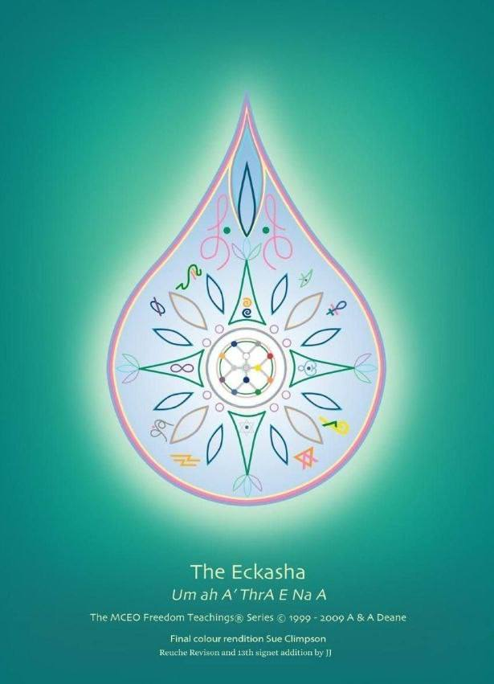

David Soto
Hi! I am Zoto, dedicated to unveiling our hidden cosmic origins through the teachings of the Law of One and Keylontic Science. Join me on a journey of profound spiritual discovery and enlightenment.
Voyagers I and II are profound explorations into our cosmic origins and multi-dimensional existence, offering transformative insights into the Law of One and the intricate framework of Keylontic Science. These books are essential for anyone seeking to understand the deeper truths of our universe and our spiritual evolution.
FREE: Voyagers Vol. I
FREE: Voyagers Vol. II
Optional but also a worthy read.
FREE: Angelic Realities
Exit the Matrix with Flame Body Activation
Keylontic Science Activation Steps
The steps must be followed in a specific order to work properly. The main goal of the initial exercises is to prepare your body for the advanced stages, particularly the "Flame Body" process and related activations.
SEQUENCE:
- Practice & Implement 12 Attitudes & Responsibilities for holding D12 Frequency.
- Tribal Shield Activation (tribal tones sung out loud). This can be done later if you wish to skip for now.
- D12 Maharic Seal and Psonn of Lyra.
- Epsilon Field Disengagement (daily, leading up to Flame Body Activation) to block disharmonic disease-causing frequencies entering your energy field.
- Emerald & Amethyst Awakening (at least once) to activate Kundalini seal and anchor rainbow bridge and telluric and doradic frequencies.
- J-Seals clearing: Use high veca codes (print them for pineal transduction and place on your body parts).
- D12 Meditation for reinforcement followed by flame body activation technique 1.
- Flame Body Activation (flame body activations): techniques 2 to 7. No more than 1 or 2 techniques per week. When completed wait 4-6 weeks before starting with Flame Body Activation technique 8.
- Flame Body Activation: techniques (8-20).
MCEO Art Collection

Art 3
Art 4
Art 5
Art 6
Art 7
Art 8
Art 9
MCEO People to Follow
MCEO 1
MCEO 2
MCEO 3
MCEO 4
MCEO 5
MCEO 6
MCEO 7
MCEO 8
MCEO 9
Distorted Teachings to Be Aware Of
Distorted 1
Distorted 2
Distorted 3
Distorted 4
Distorted 5
Distorted 6
Distorted 7
Distorted 8
Distorted 9
Our Services
Image Placeholder
Website Design
Custom 8-bit style websites for your digital presence.
Image Placeholder
Kathara Reiki
Remote Reiki services for your spiritual well-being.